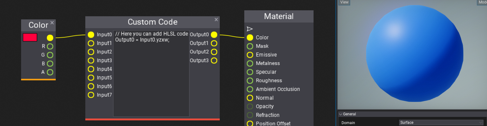
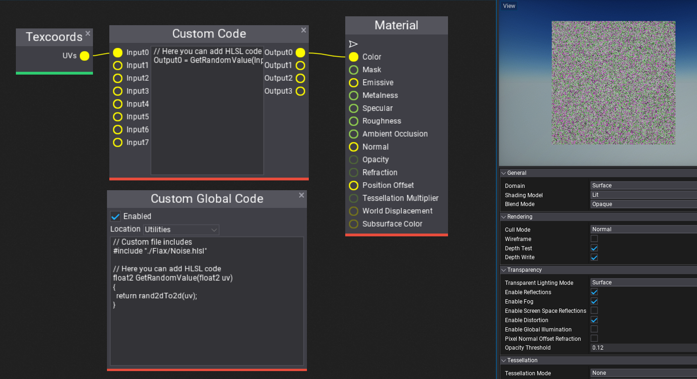
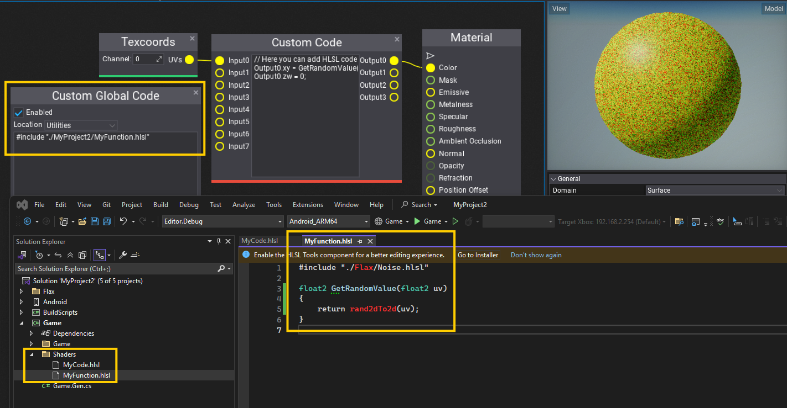

Shader Code in Materials
This page shows how to use HLSL shader code inside Materials and Material Functions.
Flax uses HLSL as a shading language as it's very popular in the industry and supports all major graphics rendering features. Additionally, engine will automatically compile HLSL shaders into target platform such as Vulkan or PS4 with full runtime support. To learn about HLSL syntax see Reference for HLSL and Programming guide for HLSL.
For better understanding how shaders are handled by the engine see dedicated documentation section here.
Custom Code

Custom Code node allows to write raw HLSL code which operates on fixed inputs and outputs. It's rather simple solution for small code chunks that can implement dynamic branching, dynamic loops or invoke shader functions from external sources (eg. shader library files).
Global Custom Code

Global Custom Code node is more robust as it inlines code at a specific location in the material template. For example, it can inject global preprocessor macros, inject custom header file includes, add shader resources binding, or declare global functions.
Use Location dropdown to properly define place of code injection. You can see it in generated shader source code (click on toolbar button).
This node provides an easy way to include custom .hlsl files from the project source code folder which can implement certain functionalities in text-based format. To do so, create a shader file in _project_/Source/Shaders. Then you can include it via: #include "./_project_name__/MyFile.hlsl". Where _project_name__ is name of the project from the _project_.flaxproj file. This allows to include shaders from plugin projects. See this page to learn more (esp. Including shader files and Using shaders sections).
Custom Shader Code File
Custom Code node inside Editor has limitations and doesn't provide a full IDE editing experience, thus it's possible to easily use a standard .hlsl shader file and include it inside materials or material functions. Shader compiler will automatically detect any changes to the source file and reload any materials using it to provide a live editing experience inside the Editor.
Use #include "./_project_name__/MyFunction.hlsl" inside the Global Custom Code node which will inject the file _project_/Source/Shaders/MyFunction.hlsl into the shader compilation.
Tip
_project_name__ is name of the project from the _project_.flaxproj file.
Example contents of _project_/Source/Shaders/MyFunction.hlsl file:
#include "./Flax/Noise.hlsl"
float2 GetRandomValue(float2 uv)
{
return rand2dTo2d(uv);
}
Example usage, where shader file is included within Custom Global Code node, then function declared in that shader file is used within Custom Code node. Notice that the custom shader file can include other files and declare other resources or functions.
